As células que são capazes de regenerar alguns tecidos de nosso corpo são conhecidos como células-tronco. Estas são células que ainda não se especializaram em nenhum dos tipos celulares que compõe o organismo e que, portanto, são capazes de se diferenciar em várias células como músculo, osso e sangue. Elas também são capazes de se dividir dando origem a outras idênticas a elas. Veja a imagem:

Existem três tipos principais de células tronco no corpo humano: totipotentes, pluripotentes e multipotentes. Essa classificação leva em conta o potencial de diferenciação de cada uma dessas células.
A mórula, conjunto das primeiras 16 células de um organismo que se originam das divisões do
zigoto
, por exemplo, são células tronco totipotentes, capazes de se diferenciar em qualquer tipo celular.

As famosas células-tronco embrionárias são provenientes da massa celular interna do
blastocisto
. Essas são as células-tronco pluripotentes. Seu poder de diferenciação é menor do que as células tronco totipotentes pelo fato de não serem capazes de formar um organismo inteiro. Observe a imagem:


Os adultos também possuem células tronco em vários locais do corpo. Essas células são responsáveis principalmente por repor as células perdidas da pele ou do sangue, por exemplo, ou quando nos machucamos. Vamos abrir o livro para ver em que locais do corpo possuem células-tronco: